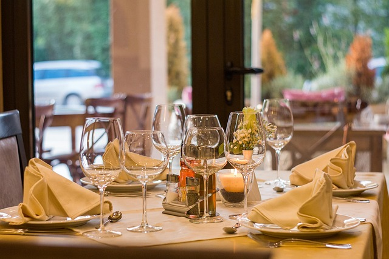
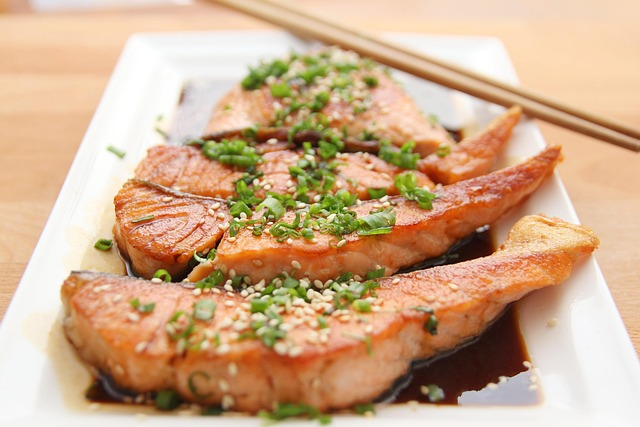

Sobre Nós
O Sabor e Arte é um restaurante que combina a paixão pela culinária com a apreciação da arte. Nossa equipe dedicada trabalha para oferecer uma experiência memorável aos nossos clientes.

Descubra uma experiência gastronômica única, onde a arte e o sabor se encontram.

Explore nossas deliciosas opções de pratos, preparados com ingredientes frescos e de alta qualidade.
O Sabor e Arte é um restaurante que combina a paixão pela culinária com a apreciação da arte. Nossa equipe dedicada trabalha para oferecer uma experiência memorável aos nossos clientes.